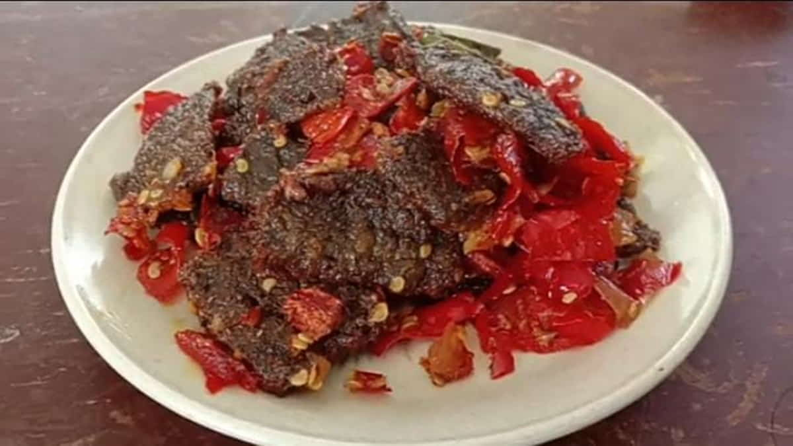

Dendeng Jantung Pisang (Denjapi) adalah kuliner khas Cimahi yang terbuat dari bahan dasar jantung pisang (bunga pisang) yang diolah menjadi dendeng, memberikan tekstur berserat, garing, dan rasa manis-gurih khas. Denjapi merupakan alternatif lauk/camilan sehat, bebas daging, dan merupakan inovasi pemberdayaan masyarakat yang populer sebagai oleh-oleh dari Kota Cimahi.

Cimahi is a city on the West Java Province.
West Java Province.
You can reach Cimahi station from all over the world.